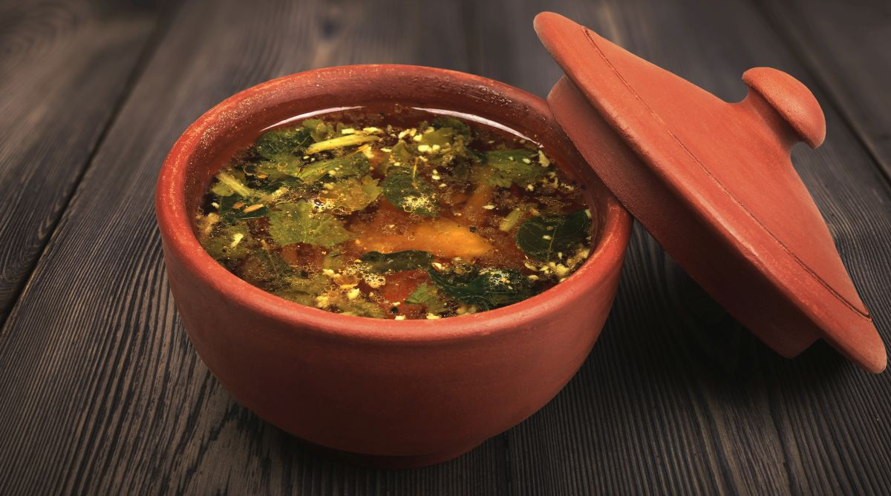

Ingredients
- 1 tablespoon Tamarind paste
- 1 tablespoon Rasam powder
- 1 medium-sized Tomato, chopped
- 1/4 teaspoon Turmeric powder
- 1/2 teaspoon Salt (or to taste)
- 2 cups Water
- 1 teaspoon Ghee (clarified butter)
- 1/2 teaspoon Mustard seeds
- 1/4 teaspoon Hing (asafoetida)
- 1 sprig Curry leaves
- 1-2 Dry red chilies
- 1 teaspoon Cumin seeds
- Fresh Coriander leaves for garnish
Instructions
- In a pot, combine tamarind paste, rasam powder, chopped tomato, turmeric powder, salt, and water.
- Bring the mixture to a boil and let it simmer for 5-7 minutes until the raw smell of tamarind disappears and the tomato softens.
- In a separate pan, heat ghee and add mustard seeds. Once they splutter, add cumin seeds, dry red chilies, hing, and curry leaves. Sauté for 1-2 minutes.
- Pour this tempering into the rasam and let it simmer for another 2-3 minutes.
- Garnish with fresh coriander leaves and serve hot with steamed rice or enjoy as a soup!